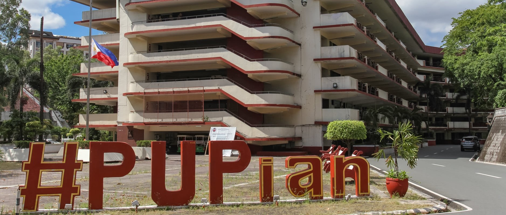

Polytechnic University of the Philippines
HISTORY
The Polytechnic University of the Philippines (PUP) is a government educational institution governed by Republic Act Number 8292 known as the Higher Education Modernization Act of 1997, and its
Implementing Rules and Regulations contained in the Commission on Higher Education Memorandum Circular No. 4, series 1997. PUP is one of the country's highly competent educational institutions.
The PUP Community is composed of the Board of Regents, University Officials, Administrative and Academic Personnel, Students, various Organizations, and the Alumni
In response to the demand for training personnel for the government service and to the felt need to provide skills essential for private business employment, the Manila Business School was founded on October 19, 1904
as part of a City School system under the superintendence of G. A. O'Reilly.
On becoming a college school, Through Republic Act (RA) 778 passed by both houses of Congress on May 20, 1952 and signed by then Philippine President Elpidio Quirino on June 21, 1952, the PSC was converted into the Philippine College of Commerce (PCC).
In 1972-1985 the PCC was converted into a chartered state university and accordingly renamed Polytechnic University of the Philippines (PUP) through Presidential Decree (PD)
1341. This led to the broadening of course offerings and the restructure/streamlining of the University's administrative organization.
PUP is a public, non-sectarian, non-profit institution of higher learning primarily tasked with harnessing the tremendous human resources potential of the nation by improving the physical,
intellectual and material well-being of the individual through higher occupational, technical and professional instruction and training in the applied arts and sciences related to the fields of commerce,
business administration, and technology.
